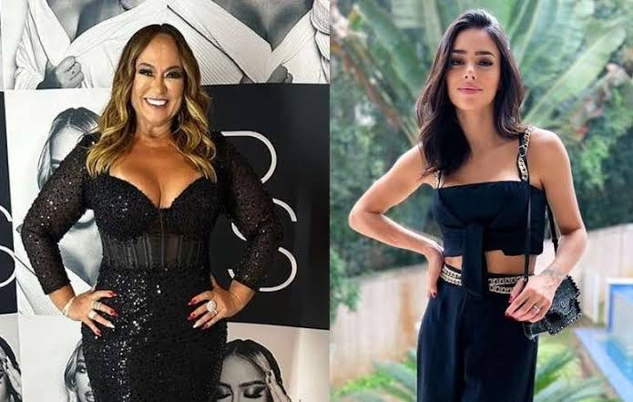
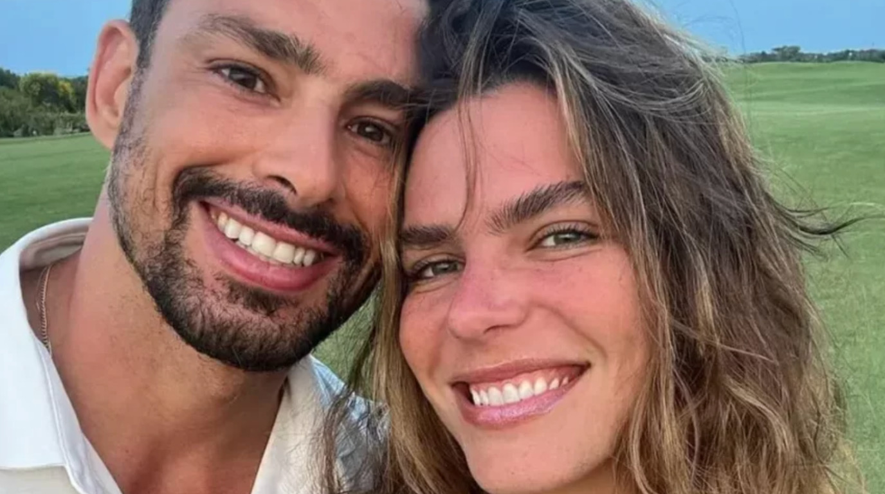

Bruna Biacardi e Neymar aguardam o primeiro filho do casal
Bruna Biancardi e Neymar anunciam em suas redes sociais que estão a espera do primeiro filho do casal. "Sonhamos com a sua vida, planejamos a sua chegada e saber que você está aqui para completar o nosso amor,deixa nossos dias muito mais felizes".
Nadine e Bruna Biancardi não tem uma boa relação
No último final de semana, ocorreu a festa supresa de Bruna Biancardi, organizada por Rafalla (irmã de Neymar), pai e madrasta do jogador. Diferente dos filhos, Nadine, mãe de Neymar não chegou nem perto da nora. Esse afastamento das duas pode ser resultado da afinidade de Bruna com o pai e madrasta do jogador.
Cauã Reymond e Mariana Goldvarb terminam casamento de 7 anos
Mariana Goldfarb anunciou o fim do casamento nesta quarta-feira(19), através de sus redes sociais. Mariana oediu para que não falassem mais sobre o assunto e pediu empatia do público. Cauã Reymond ainda não se pronunciou sobre o assunto.